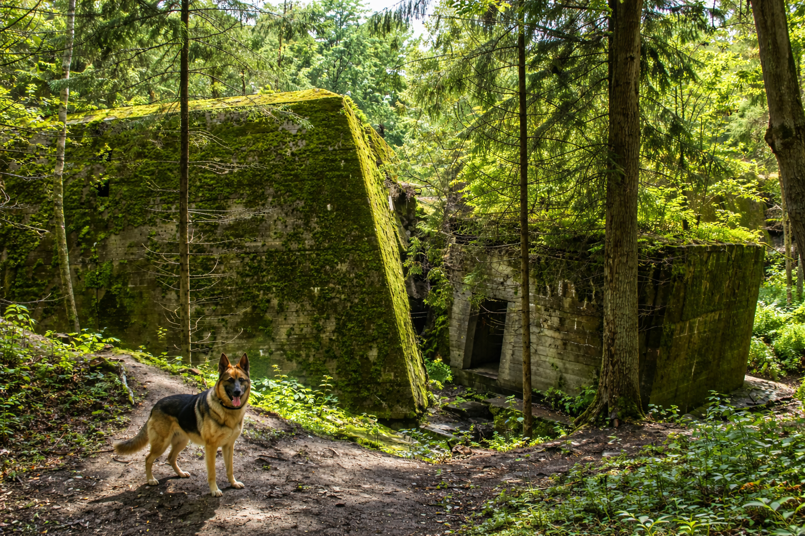

8a. Hitler eredeti bunkere
47.633827, 13.042848

Az Obersalzberg Berchtesgaden felett fekvő magasfennsíkja a 20. század egyik leginkább megterhelt
történelmi helyszíne. A náci vezetés itt alakította ki hegyi központját, amelyhez kiterjedt
föld alatti bunkerrendszer, szolgálati épületek és stratégiai létesítmények kapcsolódtak.
A terület ma már nem turisztikai látványosság a hagyományos értelemben, hanem elsősorban
emlékezeti és oktatási tér.
A fennmaradt bunkerrendszer egy része látogatható a Dokumentation Obersalzberg részeként.
A kiállítás célja nem a szenzációkeltés, hanem a történelmi folyamatok megértése:
hogyan alakult ki a diktatúra, milyen szerepet játszott a propaganda, és hogyan vált a térség
a hatalmi központ egyik szimbólumává. A bunkerjáratokban a korabeli építéstechnika is jól
megfigyelhető: vastag vasbeton falak, szellőzőrendszerek, menekülőfolyosók és a hegybe vájt
műszaki terek.
A föld alatti létesítmények építése jelentős mérnöki kihívás volt. A hegy kőzete helyenként
instabil, ezért a járatok megerősítése speciális acélbordákkal és több rétegű betonozással
történt. A rendszer egy része soha nem készült el teljesen, ami jól mutatja a háború végi
kapkodást és a stratégiai helyzet gyors romlását.
A helyszín bejárása ma is komoly atmoszférával jár: a hűvös, nyirkos levegő, a szűk folyosók
és a hegy gyomrában futó lépcsők mind hozzájárulnak ahhoz, hogy a látogató érzékelje a
történelmi súlyt. A látogatáshoz zárt cipő ajánlott, és érdemes időt szánni a kiállítás
információs anyagaira is, mert ezek adják meg a szükséges kontextust.
Ha ezt a pontot beilleszted az útvonalba, érdemes úgy tekinteni rá, mint egy rövid, de
fontos történelmi kitekintésre. A környék természeti szépsége és a hegyvidéki panoráma
kontrasztban áll a hely múltjával, ezért a hangsúly itt a megértésen, a tanuláson és a
felelősségteljes emlékezésen van.